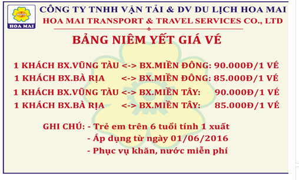

Du lịch Vũng Tàu: Cẩm nang từ A đến Z
___________________________
Vũng Tàu từ lâu đã được xem là một điểm đến du lịch hấp dẫn, bởi những vẻ đẹp tự nhiên của mình. Dù đến bất cứ đâu trong chuyến du lịch Vũng Tàu, du khách cũng sẽ bị cuốn hút bởi phong cảnh của nơi đây.
Tổng quan | Thời điểm du lịch Vũng Tàu| Di chuyển| Địa điểm tham quan |Địa điểm ăn uống |Lễ hội ở Vũng Tàu |Mẹo du lịch Vũng Tàu | Quán cà phê đẹp ở Vũng Tàu
Tổng quan du lịch Vũng Tàu
Cách trung tâm thành phố Hồ Chí Minh chỉ khoảng 3 tiếng lái xe, với đường bờ biển trải dài 20km, Vũng Tàu là một trong những điểm đến yêu thích của du khách phía Nam. Nằm nhô hẳn ra khỏi đất liền như một dải đất, từ nơi đây, người ta có thể nhìn biển Đông cả khi trời mọc lẫn lúc hoàng hôn. Bên cạnh những giá trị cảnh quan thiên nhiên, Vũng Tàu còn là miền đất có truyền thống văn hóa lịch sử lâu đời.
Vẻ đẹp của du lịch Vũng Tàu. Ảnh: dulichgiahy
Đến với Vũng Tàu bạn sẽ có cảm giác bình yên, dễ chịu với những con đường rộng rãi, thoáng đãng. Dưới là biển xanh, trên là những ngọn núi to, núi nhỏ, cùng những ngôi chùa thanh tịnh… Tất cả tạo nên một Vũng Tàu đầy ma lực, một thành phố Vũng Tàu không chỉ hiền hòa bình dị mà còn vô vàn những danh lam thắng cảnh nổi tiếng.
Khí hậu
Bà Rịa – Vũng Tàu thuộc vùng khí hậu nhiệt đới gió mùa, một năm chia hai mùa rõ rệt: Mùa mưa bắt đầu từ tháng 5 đến tháng 10, thời gian này có gió mùa Tây Nam; mùa khô bắt đầu từ tháng 11 đến tháng 4 năm sau, thời gian này có gió mùa Đông Bắc. Nhiệt độ trung bình hàng năm là 27°C, tháng thấp nhất khoảng 24,8°C, tháng cao nhất khoảng 28,6°C.
Thời điểm du lịch Vũng Tàu
Ở Vũng Tàu quanh năm là mùa du lịch vì nhiệt độ không khi nào quá lạnh hay quá nóng. Bạn chỉ cần theo dõi bản tin dự báo thời tiết để tránh du lịch Vũng Tàu khi có mưa bão. Ngoài ra, vào ngày cuối tuần và các dịp lễ tết, Vũng Tàu thu hút rất đông khách du lịch, giá cả các dịch vụ đều tăng cao.
DI CHUYỂN TỪ TP.HỒ CHÍ MINH ĐẾN VŨNG TÀU
Thành phố biển Vũng Tàu cách TP. Hồ Chí Minh chỉ 125km, là địa điểm tuyệt vời cho chuyến du lịch ngắn ngày của bạn. Hiện nay có 3 phương tiện dành cho các chuyến du lịch bụi : tự đi xe máy, đi ô tô khách hoặc tàu cánh ngầm.
Xe máy
Cách 1: Bạn đi theo Quốc lộ 1, qua khỏi cầu Đồng Nai sẽ gặp một bùng binh giao thông (ngã tư Vũng Tàu, trước đây gọi là ngã ba Vũng Tàu), từ đây bạn rẽ phải theo Quốc lộ 51. Đi thêm khoảng 100km là đến TP.Vũng Tàu.
Cách 2: Từ TP HCM, bạn có thể chọn cung đường đi từ phà Cát Lái (Q.2, TP.HCM) sang Nhơn Trạch (Đồng Nai). Đoạn đường này sẽ dẫn ra quốc lộ 51 đoạn cổng vào Khu công nghiệp Nhơn Trạch. Cung đường này gần hơn khoảng 20km.
Ngoài ra, đối với những du khách tự lái ô tô riêng có thể chọn cung đường xuống Vũng Tàu qua đường cao tốc Long Thành – Đồng Nai, sẽ giúp rút ngắn khoảng cách xuống Vũng Tàu chỉ còn khoảng 2 -2,5 tiếng.
Lưu ý:Thời gian đi đến Vũng Tàu bằng xe máy: 3 – 3,5 giờ.
Ô tô khách
Xe khách chất lượng cao: Giá từ 80.000 – 160.000 đồng/vé. Bạn có thể ra bến xe miền Đông để mua vé, thời gian xe chạy khoảng 2,5- 3 tiếng.
• Bến xe miền Đông: Địa chỉ: 292 Đinh Bộ Lĩnh, P.26, Q.Bình Thạnh, TP Hồ Chí Minh
ĐT: (08) 899 1607; Fax: (08) 899 2094; Email: webmaster@benxemiendong.com.vn.
• Bến xe khách TP.Vũng Tàu: Địa chỉ: 192 Nam Kỳ Khởi Nghĩa, Phường 3, TP.Vũng Tàu.
ĐT: (064) 3859727.
Một số hãng xe chất lượng chạy tuyến này:
• Hãng xe Hoa Mai:
Open Tour: Vũng Tàu – Hồ Chí Minh
Thời gian: 4h00 – 17h30 (mỗi chuyến cách nhau khoảng 15 phút)
- Đặt vé:
+ Quầy vé Vũng Tàu – ĐT: 0643.531 980 - 0643.531 981
+ Quầy vé Bến Thành – ĐT: 0838.218 928 – 0838.218 927
- Thời gian: 4h00 – 19h00 (mỗi chuyến cách nhau khoảng từ 15 – 30 phút)
- Đặt vé:
+ Quầy vé BX Vũng Tàu – ĐT: 0643.527 500
+ Quầy vé BX Miền Tây – ĐT: 01207 226 226 –01207 227 227
Bến xe Miền Đông
- Thời gian: 4h00 – 19h00;(mỗi chuyến cách nhau khoảng từ 15 – 30 phút)
- Đặt vé:
+ Mua vé đi trực tiếp tại BX (Vũng Tàu)
+ Mua vé đi trực tiếp tại BX Quầy vé 84 (HCM)
+Số điện thoại: 0937 756 756

• Hãng xe Phương Trang:;Giá vé: 95.000 đồng /vé.• Hãng xe Thiên Phú
;Vũng Tàu:;Địa chỉ: 04 Trần Hưng Đạo, Phường 3, TP. Vũng Tàu, Tỉnh Bà Rịa-Vũng Tàu.;Đặt vé:;064. 3 62 52 62 – 0917 35 10 35
Sài Gòn:;Bến xe Miền Đông.;Địa chỉ: Quầy vé số 36, 292 Đinh Bộ Lĩnh, Phường 26, Bình Thạnh, TP. Hồ Chí Minh.;Đặt vé: ;0917351035 – (08) 35112958
• Xe Kumho:;Địa chỉ: 292 Đinh Bộ Lĩnh, P.26, Q.Bình Thạnh, TP Hồ Chí Minh. ĐT:;(08) 35.112.112. Giá vé 85.000 đồng/vé.
• Xe Toàn Thắng: Đặt vé;0908.121.135 hoặc;0908.121.135.;Giá vé: 90.000 đồng/người
Tàu cao tốc: Tàu cao tốc Pacific Express,;mất 1h30′ với giá vé 200.000 đồng. Tàu sẽ xuất bến từ cảng Nhà Rồng (Số 05 Nguyễn Tất Thành, Quận 4) men theo sông Sài Gòn, qua vịnh Gành Rái và cuối cùng là cập bến cảng Cầu Đá, Vũng Tàu.;Hotline đặt vé: 01222 69 69 68.
Số điện thoại cần biết:
- Công an thành phố: 064 3852361
- Bưu điện trung tâm Vũng Tàu: 064 3623483
- Bệnh viện Lê Lợi, Vũng Tàu: 064 3832667
- Petro Taxi: 064 3851851
- Mai Linh Taxi: 064 3565656
Những khu vực chính của du lịch Vũng Tàu
Bãi Sau
Bãi sau Vũng Tàu nổi tiếng với bờ biển đẹp và ít sóng lớn, tập trung rất nhiều khách sạn và khu ăn uống. Do đó đa số các du khách khi du lịch Vũng Tàu đều thích ở Bãi Sau. Bãi sau còn có cung đường Thùy Vân khá nổi tiếng tương tự như con đường Trần Phú ở Nha Trang, có khá nhiều khách sạn từ bình dân đến cao cấp nằm trên con đường này

Khu vực bãi sau. Ảnh: Panoramio
Bãi Trước
Trung tâm của thành phố Vũng Tàu nằm ở bãi trước, nơi đây tập trung khá nhiều cao ốc và các khu mua bán sầm uất. Du khách thường chọn bãi tắm ở khu vực bãi sau vì bãi trước ô nhiễm hơn do mật độ dân cư sinh sống và du khách tập trung đông đúc. Tuy nhiên, bãi trước sẽ là nơi lý tưởng để bạn ngắm hoàng hôn hoặc đi dạo.
Khu vực công viên bãi trước. Ảnh: Panoramio
Long Hải
Cách thành phố Hồ Chí Minh khoảng 110km về hướng Đông Bắc (tương đương khoảng 2 – 2,5 tiếng đi xe máy), biển Long Hải là địa điểm nghỉ dưỡng được nhiều du khách yêu thích. Long Hải có bãi biển đẹp với làn nước trong xanh, cát vàng trải dài và những khu resort gần biển. Đặc biệt, biển Long Hải có nhiều hải sản tươi ngon với giá khá rẻ. Suối khoáng nóng Bình Châu nằm trên tuyến đường du lịch Long Hải, cũng là điểm dừng chân thú vị với du khách.
Đèo Nước Ngọt Long Hải. Ảnh: vnphoto.net
Hồ Cốc – Hồ Tràm
Hai bãi biển này đều thuộc huyện Xuyên Mộc, là điểm du lịch hấp dẫn du khách bởi nét hoang sơ nguyên thủy hiếm có. Biển ở đây nước trong xanh in đáy cát quanh năm, khu bãi tắm cát trắng trải rộng, độ dốc thoai thoải và đặc biệt đẹp thơ mộng nhờ các tảng đá nằm trong bãi tắm tạo nên những đợt sóng biển tung bọt trắng xóa.
Ảnh: dulichhotram
Suối Ồ
Biển Suối Ồ nằm tại xã Bình Châu, huyện Xuyên Mộc, cách chợ Bình Châu khoảng 3km, trên đường hướng về suối nước nóng Bình Châu. Biển Suối Ồ vừa có suối nước ngọt, vừa có bãi cát trắng mịn màng với nước biển xanh mênh mông. Đây là một trong những bãi biển hiếm hoi ở Việt Nam vừa có nước ngọt và nước mặn.
Ảnh: ST
Côn Đảo
Côn Đảo nổi tiếng với bãi biển trong vắt, hàng dừa xanh và bờ cát trắng có thể làm say mê bất cứ du khách nào. Thật dễ hiểu vì sao Côn Đảo thu hút rất nhiều du khách trong và ngoài nước đến thưởng lãm. Với vẻ đẹp hoang sơ và chưa bị tác động nhiều bởi ngành công nghiệp du lịch, Côn Đảo hiện nay quả thật là thiên đường du lịch hiếm có ở Việt Nam.
Bãi biển hoang sơ của Côn Đảo. Ảnh: Airmekong.com
Những địa danh không thể bỏ qua khi du lịch Vũng Tàu
Du khách vẫn quen chọn Vũng Tàu để đổi gió dịp cuối tuần bởi vị trí rất gần TP. HCM. Song ngoài những bãi tắm và quán ăn ngon, Vũng Tàu còn nhiều điểm du lịch thú vị để bạn khám phá.
Thích Ca Phật Đài
Đây là một ngôi chùa nằm trên sườn núi Lớn của thành phố Vũng Tàu. Vẻ đẹp của ngôi chùa kết hợp rất khéo léo giữa kiến trúc tôn giáo và phong cảnh thiên nhiên. Đáng chú ý nhất là ngọn tháp Bát Giác cao 19m và tượng Phật Thích Ca ngồi thiền trên tòa sen xây bên lưng chừng núi, du khách đứng từ xa có thể chiêm ngưỡng được.
Đường đi: Du khách đến Thích Ca Phật Đài theo đường Lê Lợi, rẽ về đường Trần Phú hoặc từ đường Trần Phú – bãi Trước theo đường ven biển đi qua bãi Dâu, tới địa phận Bến Đá là gặp Thích Ca Phật Đài.
Tượng Thích Ca Phật Đài. Ảnh: banchanviet
Tượng Đức Chúa dang tay
Tượng Chúa Ki-Tô hay Tượng Đức Chúa dang tay đứng trên đỉnh Núi Nhỏ của thành phố Vũng Tàu, được xây từ năm 1974. Bức tượng này cao 32 m, sải tay dài 18,3 m trên độ cao 170 m nhìn ra biển, bên trong có cầu thang 133 bậc lên tận 2 tay của tượng. Bức tượng có thể xem như một phiên bản tương tự tượng chúa dang tay tại thành phố Rio de Janeiro ở Brasil.
Vị trí: Tượng chúa Kitô nằm trên đỉnh núi Nhỏ, thành phố Vũng Tàu.
Tượng chúa Ki –Tô. Ảnh: dulichbanvatoi
Tòa Bạch Dinh
Năm 1898, Toàn quyền Đông Dương Paul Doumer đã cho xây Bạch Dinh (Villa Blanche) trên nền pháo đài Phước Thắng nơi từng khai hỏa bắn vào tàu chiến Pháp gần 50 năm trước. Bạch Dinh là một công trình kiến trúc La Mã 3 tầng, cao 19 m, lưng tựa vào Núi Lớn. Tại đây hiện còn lưu giữ 19 khẩu thần công.
Vị trí: Số 10 đường Trần Phú, thành phố Vũng Tàu.
Vẻ đẹp của Bạch Dinh nhìn từ trên cao. Ảnh: tripssaving
Khu du lịch Hồ Mây
Đây là một trong những điểm đến thú vị nên khám phá khi đến Vũng Tàu. Vừa được đi cáp treo ngắm cảnh, chơi trò chơi thoải mái lại còn được tắm hồ. Đặc biệt, nơi đây là điểm đến lý tưởng dành cho các em thiếu nhi với hàng loạt những trò chơi như như máy bay, ngựa quay, nhà liên hoàn, xe lửa, công viên nước thiếu nhi,… chắc chắn sẽ mê hoặc khiến các em thỏa chí vui chơi trong kỳ nghỉ của mình.
Ảnh: doisongphapluat.com
Hòn Bà
Hòn Bà là một hòn đảo nhỏ, dưới chân đảo sóng biển đánh tung bọt trắng xoá rất lên thơ, nằm phía ngoài biển theo đường hạ Long vòng Núi nhỏ, Từ Bãi Trước, qua Bãi Dứa đến mũi Nghinh Phong. Hòn Bà nằm cách chân Núi Nhỏ khoảng 200m. Năm 1881 ông Hồ Quang Minh gốc miền Trung đã bỏ kinh phí ra xây dựng một ngôi miếu nhỏ trên đảo gọi là Miếu Bà.
Khi thủy triều xuống thấp, có thể men theo một lối đá chập trùng để ra đảo. Ngày rằm hay mồng một, bà con thường ra đảo rất đông để thắp hương cầu may tại ngôi miếu nhỏ này.
Khi thủy triều xuống, du khách có thể đi bộ ra Hòn Bà. Ảnh: panoramio
Khu di tích Đình Thắng Tam
Tại khu di tích này, ngoài Ngôi Tiền Hiền và Lăng Ông Nam Hải, miếu Bà Ngũ Hành còn có ngôi miếu Bà, tọa lạc trên một hòn đảo nhỏ, nằm chông chênh, nhô ra trước mặt biển. Lễ hội Nghinh Ông Thắng Tam Vũng Tàu được xem là một trong những sản phẩm du lịch tâm linh của Bà Rịa Vũng Tàu, thu hút đông đảo du khách.
Vị trí: 77A đường Hoàng Hoa Thám, P Thắng Tam, Vũng Tàu.

Ảnh: bariavungtau.com
Một số lễ hội lớn của du lịch Vũng Tàu
Hàng năm, trên địa bàn tỉnh Bà Rịa – Vũng Tàu, người dân địa phương đều tổ chức những Lễ hội dân gian truyền thống, mang đậm dấu ấn văn hóa và phong tục, tín ngưỡng của cư dân vùng biển, thu hút hàng chục ngàn lượt khách thập phương đến tham gia. Dưới đây là một số Lễ hội nổi tiếng ở Vũng Tàu mà bạn cần ghi nhớ khi có dịp ghé phố biển xinh đẹp này.
Lễ giỗ Đức Thánh Trần Hưng Đạo
Ngày 20/08 Âm Lịch hàng năm, lễ giỗ Đức Thánh Trần Hưng Đạo được tổ chức tại Hội đền thờ Đức Thánh Trần: số 68 Hạ Long, phường 2, thành phố Vũng Tàu. Từ lâu, Lễ giỗ Đức thánh Trần không còn bó hẹp trong cộng đồng địa phương mà đã trở thành lễ hội thu hút nhiều người từ các địa phương trong cả nước.
Thông qua các lọai hình họat động của lễ hội, còn là cách để giáo dục các thế hệ nối tiếp nhau về lòng yêu nước, tự hào dân tộc. Vào dịp lễ hội, hàng vạn lượt khách thập phương và người dân địa phương cùng tham dự lễ khai mạc và lễ dâng hương.
Lễ hội Dinh Cô
Dinh Cô là khu đền có kiến trúc hoành tráng, với những nét kiến trúc truyền thống, nằm bên bờ biển Long Hải của tỉnh Bà Rịa – Vũng Tàu. Lễ hội Dinh Cô (10 – 12/2 Âm lịch hàng năm) mang đậm màu sắc dân gian, mỗi lần mở hội đã thu hút hàng vạn du khách đến tham dự và thưởng ngoạn cảnh đẹp nơi đây.
Lễ hội Dinh Cô Vũng Tàu. Ảnh: dulichtructuyen
Lễ hội nghinh Ông
Hàng năm lễ Nghinh Ông được tổ chức tại lăng Cá Ông ở đường Hoàng Hoa Thám, thành phố Vũng Tàu. Lễ hội tổ chức trong 3 ngày từ ngày 16 – 18 tháng 8 âm lịch. Đây là lễ hội nước lớn nhất của ngư dân Vũng Tàu. Lễ hội Nghinh Ông Vũng Tàu đã được Bộ VH-TT-DL và Tổng cục Du lịch chọn là 1 trong 15 lễ hội lớn của cả nước từ năm 2000.
Lễ hội Đình Thần Thắng Tam
Hàng năm lễ hội được tổ chức trong 4 ngày, từ ngày 17-20 tháng 2 âm lịch. Đây là lễ hội cầu an, nhân thời điểm kết thúc và mở đầu cho một mùa thu hoạch tôm cá. Phần lễ diễn ra rất cầu kỳ: cúng tế, lễ vật tế thần, dâng hương quỳ lạy, chiêng trống, kèn nhạc và có rất nhiều điều kiêng kỵ như heo dùng để tế lễ phải có bộ lông cùng màu, người có tang không được tham gia vào việc nghi thức tế lễ. Phần hội có nhiều trò vui chơi giải trí như múa lân, hát bội.
Lễ hội Đình Thần Thắng Tam. Ảnh : ST
Lễ hội Đình Thần Thắng Tam
Lễ hội Miếu Bà Ngũ Hành được tổ chức hàng năm vào các ngày 16, 17, 18/10 Âm lịch tại Miếu Bà Ngũ Hành, thành phố Vũng Tàu. Lễ hội được tổ chức long trọng với những nghi thức tế lễ trang nghiêm cùng các trò chơi dân gian, thu hút đông đảo nhân dân và du khách tới dâng hương cúng vái.
Ăn gì khi du lịch Vũng Tàu?
Ẩm thực Vũng Tàu không chỉ nổi tiếng với món bánh khọt mà còn rất nhiều loại hải sản, cà phê, các món ăn phong cách Nga,… Du lịch Vũng Tàu mà không biết địa chỉ những quán ăn ngon thì thật vô cùng đáng tiếc.VTN Travel sẽ giới thiệu cho bạn một loạt những địa chỉ ăn ngon ở Vũng Tàu đã được tín đồ du lịch khắp nơi bầu chọn.
HẢI SẢN
1. Nhà hàng, quán ăn sang trọng: ưu điểm của những nơi này là rộng rãi thoáng mát, có chỗ đậu xe, phù hợp với khách du lịch nghỉ dưỡng, gia đình, vì giá cả ở những quán này hơi cao.
- Gành Hào : Là nhà hàng, có nhiều vị trí ngồi rộng – thoáng mát thích hợp cho những buổi tiệc gia đình, nhóm bạn bè. Đặc biệt ở đây có “tầm nhìn tuyệt đẹp”, vừa thưởng thức món ăn ngon vừa có thể “phóng” tầm nhìn ngắm biển. Thực đơn của Gành Hào khá phong phú với hơn 100 món ăn. Do đây là nhà hàng nên giá các món ăn cũng khá cao nhưng nhiều du khách nhận xét “giá tương xứng vơi chất lượng”. Địa chỉ: 03 Trần Phú, P.5, TP Vũng Tàu và 09 Hạ Long, P.2, TP Vũng Tàu.
Ảnh: stylemy0725
- Hải sản Thành Phát 1: Hải sản tươi, tự chọn tại quầy rồi cân kg, giá tương ứng chất lượng, đồ ăn ngon. Địa chỉ: 334 Trần Phú, P.5, TP. Vũng Tàu.
- Quán Tre: Quán này thuộc dạng khá cao cấp ở Vũng tàu. Hải sản rất tươi ngon nhưng giá hơi đắt, đổi lại chất lượng, không gian và phục vụ ổn. Đặc sản của quán là gỏi và lẩu hải sản. Địa chỉ: 411 đường Thống Nhất mới, P.8, TP.Vũng Tàu.
- Hải sản Lâm Đường: Không gian ở đây rộng, thoáng, mát có nhiều lựa chọn như ngồi trong nhà, ngoài trời. Địa chỉ: 125B Trần Phú, P. 5, TP. Vũng Tàu.
Ảnh: nhahanghaisan.lamduong
2. Quán ăn bình dân:
- Ốc Tự Nhiên 2: Đồ ăn ngon, giá cả không quá đắt so với các quán trong khu vực. Quán nằm sát biển, ngay bãi trước, nên ngồi phía ngoài gió biển rất mát. Địa chỉ: 34 Trần Phú, TP. Vũng Tàu.

Ảnh: jessie_tran27
- Ốc Thiên Nhiên: Mặt bằng thoáng, ốc tươi ngon và giá bình dân. Địa chỉ: 245 Trương Công Định, TP. Vũng Tàu.
- Quán Nướng Cô Nên: Đồ ăn rất hợp khẩu vị, nhiều món ăn, giá cả vừa phải. Quán có không gian thoáng, có cả dãy bàn nhìn thẳng ra biển. Địa chỉ: 6 Trần Phú, TP. Vũng Tàu.
Ảnh: phan_my
- Kim Anh: Giá cả hợp lý, thức ăn nêm nếm vừa miệng. Địa chỉ: Nằm trong khu ăn uống đêm ở Vũng Tàu, sau Imperial Vũng Tàu, đường Nguyễn Chí Thanh, P. Thắng Tam, TP. Vũng Tàu.
- Chợ hải sản Xóm Lưới: Bán nhiều hải sản tươi ngon, giá bán cũng phải chăng. Có thể mua mang về hoặc nhờ chế biến đều được. Đây là khu chợ tự phát của những người làm nghề đi biển nằm gần công viên bãi Trước, ngay ngã ba đường Phan Bội Châu và Nguyễn Công Trứ.
Ảnh: Tiểu Duy
BÁNH KHỌT
- Bánh khọt Cô Ba Vũng Tàu:Quán này khá nổi tiếng, không gian rộng rãi, sang trọng, sạch sẽ. Địa chỉ: 01 Hoàng Hoa Thám, P.3, TP. Vũng Tàu.
- Bánh khọt Bà Hai:Quán nhỏ, chất lượng bánh ngon. Ngoài ra ở đây còn có bán món cháo hàu. Địa chỉ: 42 Trần Đồng, P. 3, TP. Vũng Tàu.
Ảnh: Tiểu Duy
- Bánh khọt 41:Bánh ngon, tôm to, chắc thịt, giòn ngọt và rất tươi. Địa chỉ: 24A Trần Đồng, TP. Vũng Tàu.
- Bánh khọt Gốc Vú Sữa: Quán này có tiếng ở Vũng Tàu, không gian nhỏ, khá đông. Địa chỉ: 14 Nguyễn Trường Tộ, P. 2, TP. Vũng Tàu.
- Bánh khọt Út Loan – Bà Triệu: Quán ngồi thoải mái, phục vụ nhanh, đồ ăn ngon. Địa chỉ: 67 Bà Triệu, P. 4, TP. Vũng Tàu.
LẨU CÁ ĐUỐI
- Lẩu cá đuối Trương Công Định: Lẩu nêm nếm khá ngon, menu với nhiều món đa dạng, giá cả không đắt. Địa chỉ: 40 – 44 Trương Công Định, TP. Vũng Tàu.
Ảnh: vobaotran
- Quán ăn hải sản 7 Lượm: Quán rộng rãi, sạch sẽ, thiết kế tường vẽ khá sang trọng nhưng giá bình dân. Địa chỉ: 37 Nguyễn Trường Tộ, P. 3, TP. Vũng Tàu.
- Út Mười:Lẩu tươi ngon, có không gian rộng, sạch sẽ. Địa chỉ: 16A Trương Công Định, TP. Vũng Tàu.
BÔNG LAN TRỨNG MUỐI
- Bánh kẹp Gốc Cột Điện – Bánh Bông Lan Trứng Muối: Bánh ở đây mềm và thơm, khá đông, bán mang về. Địa chỉ: 17B Nguyễn Trường Tộ, P. 2, TP. Vũng Tàu.
Ảnh: ST
- Bông lan trứng muối A Tỷ:Bánh rất ngon, bột dai mịn, trứng tươi. Địa chỉ: 6 Đồ Chiểu, P.1, Vũng Tàu.
MỘT SỐ ĐỊA CHỈ QUÁN ĂN NGON KHÁC:
- Cơm tấm Hoa Hướng Dương:Cơm ở đây ăn ngon, vị nêm vừa miệng, nhân viên phục vụ nhiệt tình. Địa chỉ: 140 Nam Kỳ Khởi Nghĩa, P. 2, TP. Vũng Tàu.
- Sữa chua Cô Tiên::Sữa chua dẻo siêu ngon, siêu vừa miệng. Địa chỉ: Đường lên Ngọn Hải Đăng, TP. Vũng Tàu.
Ảnh: hlk_vy
- Gỏi cá mai Vườn Xoài: Quán nổi tiếng với món gỏi cá mai. Cá vừa miệng, ngọt, ngon. Ăn kèm bánh tráng, rau sống và nước chấm đậu phộng mè. Không gian sạch sẽ, thoáng mát. Địa chỉ: 34/5 Hoàng Hoa Thám, TP. Vũng Tàu.
- Hủ Tiếu Vũng Tàu: Hủ tiếu ngon, thịt nhiều. Địa chỉ: 376 Trương Công Định, P. 7, TP. Vũng Tàu.
- Bò Né Ô Kìa:Đồ ăn ngon, nhiều món đa dạng, giá bình dân. Địa chỉ: 648 Trương Công Định.
Mẹo/Thông tin khác
Thú vui ở Vũng Tàu là thuê xe đạp đôi buổi tối đi tham quan thành phố, bạn nên liên hệ với khách sạn để được hỗ trợ. Tham khảo trước một số quán ăn tin cậy và chất lượng vì Vũng Tàu “nổi tiếng” cung cấp các dịch vụ nhà hàng kém chất lượng. Tuyệt đối không vào các quán ăn do tài xế taxi hoặc xe ôm không tin tưởng giới thiệu để tránh bị tính với giá đắt. Xem kỹ bảng giá khi vào một nhà hàng lạ, có thể hỏi trước giá cả cẩn thận.
Đặc biệt, du khách nên đặt phòng khách sạn sớm vì các khách sạn đa số sẽ kín phòng vào cuối tuần.
QUÁN CÀ PHÊ ĐẸP Ở VŨNG TÀU
MILLA Nakedsoul
Gọi MILLA Nakedsoul là quán cà phê thì chẳng đúng bởi vì ở đây không bán cà phê mà chỉ có cocktail và bia thôi. Tuy nhiên, quán này nếu muốn chụp choẹt sống ảo thì bao đẹp. Tọa lạc tại địa chỉ 30 Hạ Long, phường 2, Vũng Tàu, MILLA Nakedsoul nằm nép mình trên tầng thượng một căn nhà cũ thời Pháp nhỏ xinh với view nhìn về phía biển cực đẹp.
Ảnh: MILLA Nakedsoul
Điểm nổi bật nhất của MILLA Nakedsoul phải kể đến là view ngắm hoàng hôn đẹp thôi rồi. Trong không gian ngập tràn tiếng sóng biển, vừa ngắm hoàng hôn vừa nhâm nhi một ly cocktail là đã quá đủ cho một buổi chiều rồi nhỉ? Giá đồ uống cùa quán dao động từ 35-100.000 đồng tùy loại.
Địa chỉ: 30 Hạ Long, phường 2, Vũng Tàu
Thời gian mở cửa: Từ 5 pm – 11h30 pm
Bohemiens Cafe
Nằm trong một con hẻm trên đường Bacu (155/2 đường Bacu, phường 4, Vũng Tàu) Bohemiens là một quán cà phê với không gian nhỏ xinh dành cho những ai đã chán ngán cái ồn ào của phố thị với những dòng xe cộ đông đúc. Bên trong quán được trang trí khá nhiều những vật dụng cổ như chiếc ti vi đời đầu, máy may, máy chụp hình… nên đến đây bạn sẽ có cảm giác thân thuộc như quay về tuổi thơ.
Ảnh: Bohemiens Cafe
Tuy nhỏ nhưng quán vẫn có những không gian tách biệt và thoải mái dành cho du khách. Phía bên ngoài quán có đặt những dãy ghế dài để cho các bạn trẻ vừa muốn có không gian ngồi trò chuyện, vừa tiện thể chụp hình check-in các kiểu. Ngoài ra, điểm cộng của Bohemiens Cafe là thức uống của quán khá độc đáo với giá cả rất “hạt dẻ”, dao động từ 15.000 – 35.000 đồng tùy loại.
Địa chỉ:155/2 đường Bacu, phường 4, Vũng Tàu
Thời gian mở cửa: 7:00 am – 10:00 pm (trong tuần) và 7:00 am – 11:00 pm (cuối tuần)
Black & White Coffee
Có không gian vừa cổ điển pha chút hiện đại, Black & White Coffee được decor khá dễ thương với hai tone màu chủ đạo là trắng và đen. Theo nhiều du khách nhận xét thì quán yên tĩnh, mát mẻ, chỗ ngồi khá thoải mái và cũng có nhiều góc để sống ảo. Đồ uống của quán ngon và đa dạng với giá dao động từ 25.000 – 45.000 đồng.
Ảnh: hoangminh.nobita
Địa chỉ:91 Bà Triệu, phường 4, Vũng Tàu
Thời gian mở cửa: 7:30 am – 22:00 pm
La Vie En Rose Coffee
Đây là một trong những quán cà phê có kiến trúc và lối bày trí rất ấn tượng với tường và mái nhà được làm bằng kính trong suốt. Quán có cả không gian bên trong và bên ngoài, dãy bàn bên ngoài có hướng view biển, nhưng chỉ thích hợp ngồi vào chiều hoặc tối. Nếu bạn đến đây vào ban ngày thì nên chọn ngồi trong nhà là tốt nhất.

Ảnh: rin____.____
Địa chỉ:6 Hạ Long, phường 2, Vũng Tàu
Ngọc Tước Book Café
Nằm trên con phố yên tĩnh trên đường Thi Sách, Ngọc Tước Book Café là nơi thích hợp nhất để bạn thư giãn và chìm đắm trong không gian sách, sau khi thỏa thích tắm biển Vũng Tàu. Quán khá rộng và chỗ ngồi cũng rất phong phú, thế nên nếu muốn khám phá hết không gian ở đây, bạn sẽ phải quay lại đến mấy lần.
Ảnh: Ngọc Tước Book Café
Bên cạnh khu vực máy lạnh trong nhà, quán còn có khu vực ngoài trời, thích hợp cho những ai thích không gian mở, muốn hòa mình cùng thiên nhiên. Thức uống ở đây được nhiều khách hàng đánh giá là khá ngon, có giá mềm, không gian nhẹ nhàng, không ồn ào phù hợp với những bạn vừa thích đọc sách, vừa thưởng thức cà phê.
Địa chỉ:9/9 đường Thi Sách, phường 8 gần bãi Sau Vũng Tàu.
Tree House Billiard & Coffee
Đúng như tên gọi, Tree House giống như một khu rừng thu nhỏ với không gian tràn ngập cây cối. Đặc biệt, chính giữa quán có một cái cây rất to, tỏa bóng mát khắp quán. Thiết kế của quán chủ yếu sử dụng chất liệu gỗ mộc mạc nhưng vô cùng độc đáo. Dù cho ngồi bất kì vị trí nào, bạn cũng sẽ dễ dàng chụp được nhiều ảnh để sống ảo.
Ảnh: honganthuy_1211
Địa chỉ:97 Trần Hưng Đạo, phường Phước Nguyên, TP. Bà Rịa
UP Garden
Nằm trong một con hẻm nhỏ, UP Garden là một khu vườn xinh xắn dành cho những ai yêu thích không gian yên tĩnh, gần gũi với thiên nhiên. Khi đến đây, bạn sẽ được hòa mình trong màu xanh mát mắt của cỏ cây, được thưởng thức những món ăn, thức uống “nhà làm” cực ngon và chất lượng trong nền nhạc du dương.
Ảnh: vuonghoanghavy
Từ trong nhà ra ngoài ngõ, chỗ nào cũng trải dài một màu xanh ngát. Thời gian mở cửa của quán là: 7:00 am – 11:00 am, 16:30 pm – 22:00 pm.
Địa chỉ:381/4 Cách Mạng Tháng 8, phường Phước Nguyên, TP. Bà Rịa.